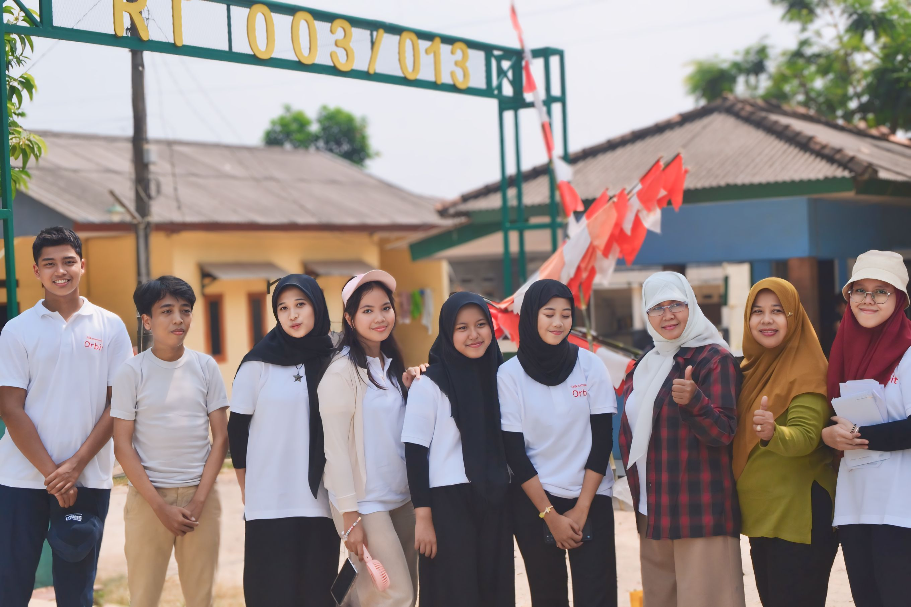
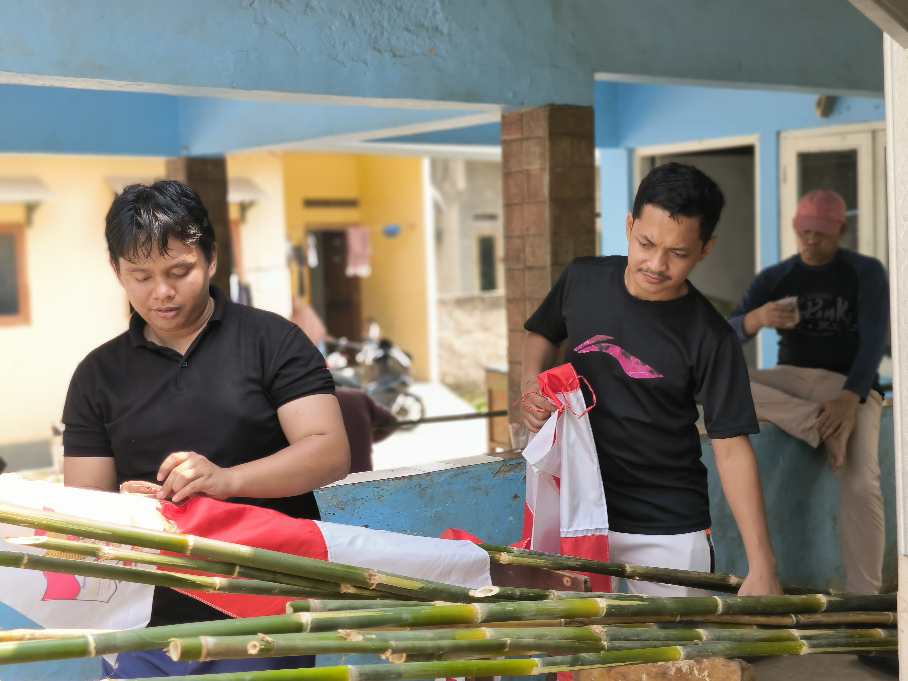
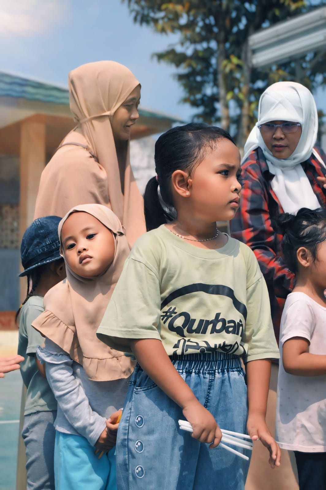
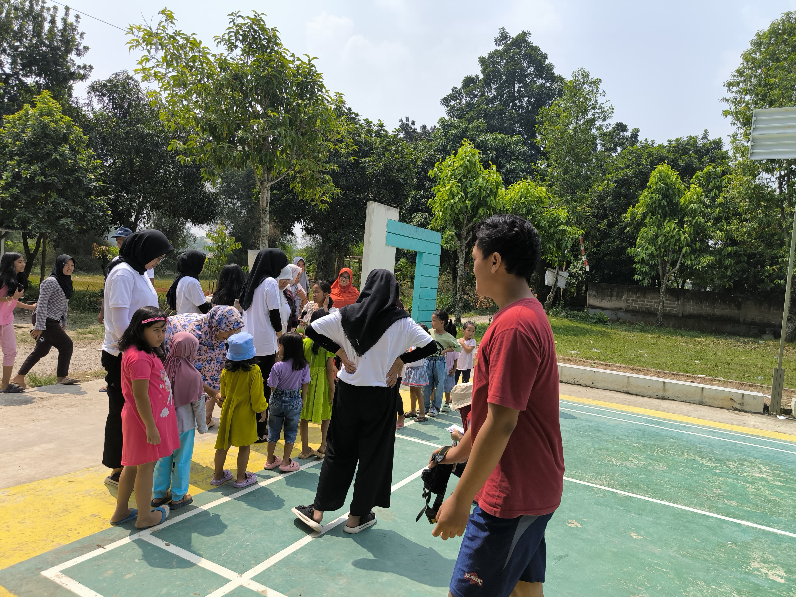
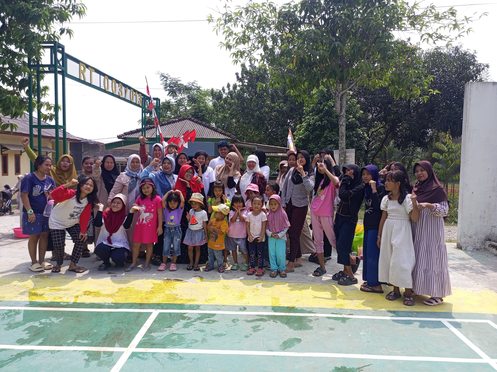

Peringatan 17 Agustus Warga RT 03
Tema: "GENERASI BARU RT 03 TERUS MAJU DAN BERSATU"
Tema: "GENERASI BARU RT 03 TERUS MAJU DAN BERSATU"
Rangkaian kegiatan peringatan kemerdekaan 17 Agustus di RT 03
Pembukaan acara semarak kemerdekaan diselenggarakan di Lapangan Serbaguna RT 03 diikuti seluruh warga.
Perlombaan makan kerupuk, balap karung helm, estafet tepung, dan kreasi memasak nasi goreng.
Turnamen Catur, Domino/Gapsa di Pos Ronda & Tournament Mobile Legends Karang Taruna.
Malam keakraban warga, penampilan bakat anak-anak RT 03, pemotongan tumpeng, & penyerahan hadiah pemenang.
Kategori lomba semarak 17-an yang dapat diikuti oleh seluruh warga RT 03
Susunan panitia semarak peringatan HUT RI RT 03
Penanggung Jawab (Ketua RT 03)
Ketua Panitia 17-an
Sekretaris Panitia
Bendahara Acara
Koleksi kenangan dan dokumentasi lomba 17 Agustus warga RT 03




